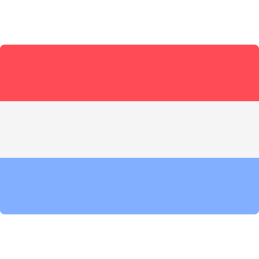

SECO-ASSIST 2018-2021
Belgian Excellence of Science Research Project
Software ecosystems are the most promising avenue for organising the software needs of the digital era. Jointly funded by F.R.S.-FNRS and FWO-Vlaanderen, the four-year Excellence of Science Project SECO-ASSIST aims to realise a scientific breakthrough to nurture the ecosystems of the future, by providing novel software recommendation techniques that address the resilience, evolvability, heterogeneity, and social interaction. To achieve this the project partners will combine their expertise in social networks (UMONS), software testing (UAntwerpen), software reuse (VUB) and database evolution (UNamur).
Les écosystèmes logiciels forment la voie la plus prometteuse pour organiser les besoins logiciels de l'ère numérique. SECO-ASSIST vise à réaliser une percée scientifique en assistant les écosystèmes de l'avenir, par le développement de nouvelles techniques de recommandation logicielle qui considèrent la résilience, l’évolutivité, l'hétérogénéité et les interactions sociales. Pour ce faire, les partenaires du projet joindront leurs expertises en réseaux sociaux (UMONS), tests de logiciels (UAntwerpen), réutilisation de logiciels (VUB) et évolution de bases de données (UNamur).

Software ecosystemen beloven om de noden en behoeften van software in dit digitale tijdperk te realiseren. SECO-ASSIST beoogt een wetenschappelijke doorbraak te realiseren in de ondersteuning van toekomstige ecosystemen, door middel van innovatieve aanbevelingstechnieken die de duurzaamheid, evolutie, heterogeniteit en sociale interactie beter aanpakken. Om dit te bereiken, zullen de projectpartners hun expertise combineren in sociale netwerken (UMONS), software testen (UAntwerpen), software hergebruik (VUB) en databankevolutie (UNamur).
Latest News
Public PhD defense of Zeinab Abou Khalil Friday, February 26, 2021
Zeinab Abou Khalil publicly defended her PhD dissertation on "Understanding th impact of release policies on software development processes" jointly supervised by Tom Mens (University of Mons, Belgium) and Laurence Duchien (Université de Lille, France).
Article published in Empirical Software Engineering journal Sunday, February 21, 2021
Joint research with UMONS, VUB and URJC (Madrid) on the outdatedness, security and technical lag of Debian-based Docker images is published in the Empirical Software Engineering journal.
SECO-ASSIST Research Seminar Wednesday, September 04, 2019
A one-day event will be held at the University of Mons on September 4th. More information on this page.
Presentation of npm software ecosystem health at Drupal Camp Belgium Saturday, November 24, 2018
[Slides] Like many other web-based frameworks, Drupal is increasingly relying on JavaScript libraries (such as React, Node.JS, Angular and many more) for improving its user experience. However, relying on such JavaScript libraries implies a significant risk of breaking or compromising your applications. To illustrate this, we present a series of empirical results on the health of the npm dependency network for JavaScript packages. Our findings based on a historical data analysis show that the npm package ecosystem suffers from a range of important technical health issues related to how its dependency network is structured and evolves over time. Examples of such issues include the exponential growth of npm, the huge number of transitive dependencies, the abundance of outdated dependencies, and the long time it takes to fix security vulnerabilities and to benefit from these fixes in dependent packages. We provide empirical evidence of these problems, and suggest ways to reduce their potential impact by providing concrete guidelines.
Press release on Daily Science website about SECOHealth Monday, March 12, 2018
Comment va la santé de votre écosystème logiciel?
Christian Dubrulle, journaliste, présente les travaux de recherche du Prof. Tom Mens (UMONS) et ses collègues en Belgique et au Québec autour des écosystèmes logiciels dans le cadre des projets de recherche SECOHealth et SECO-ASSIST.